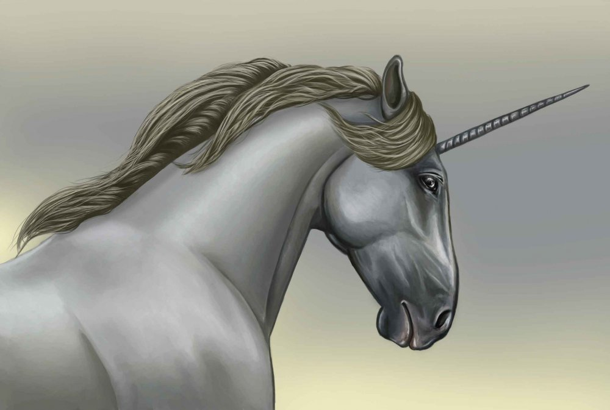
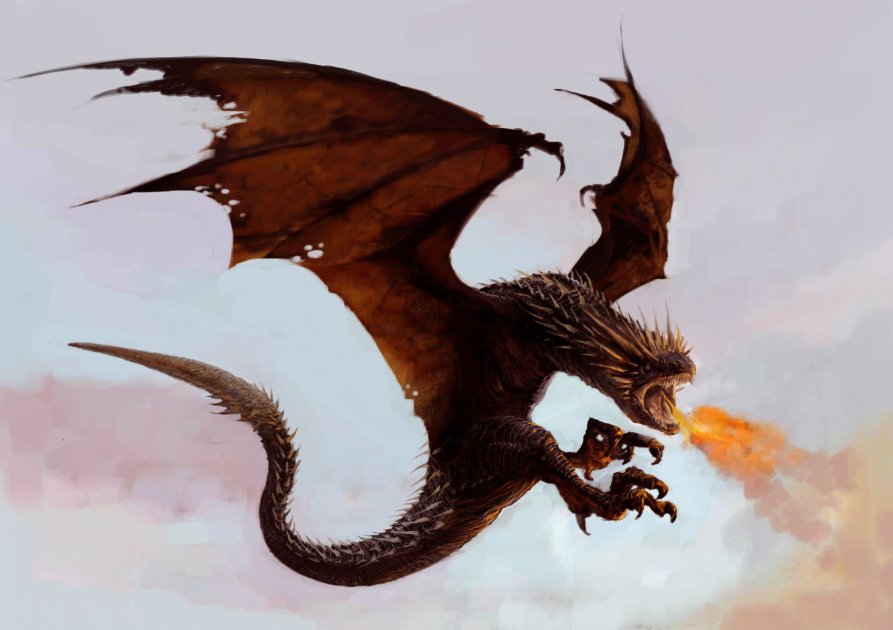
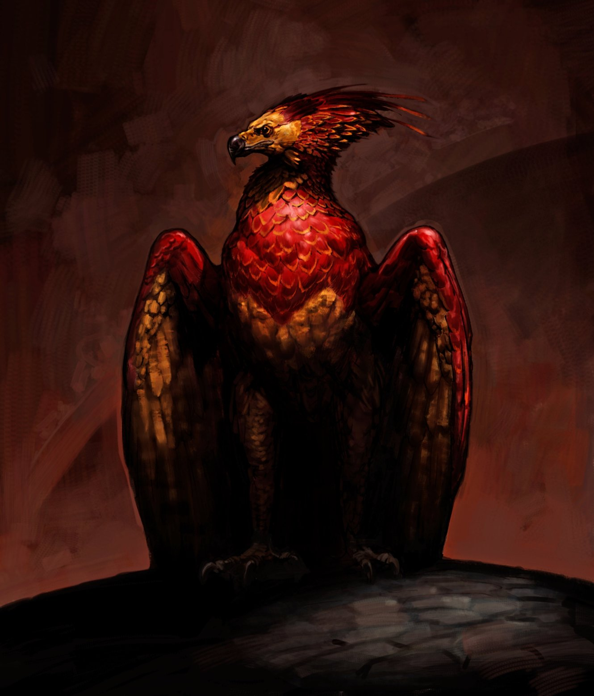
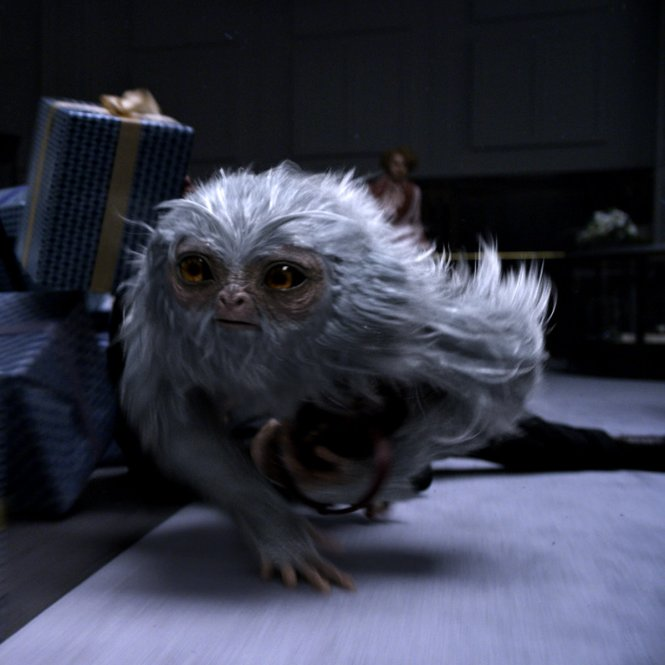
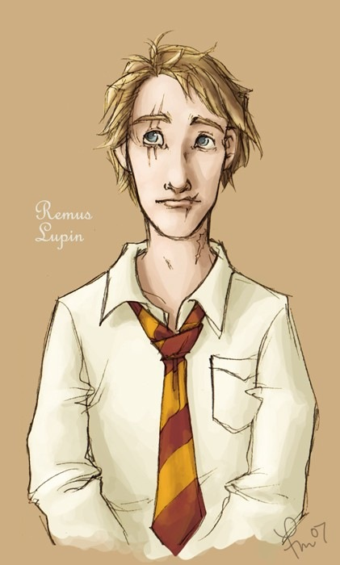
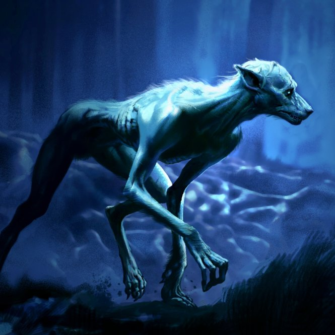

The following description of the powers and properties of
the three main wand cores used by Mr Garrick Ollivander are taken from his own notes.
Early in my career, as I watched my wandmaker father wrestling with
substandard wand core materials such as kelpie hair, I conceived
the ambition to discover the finest cores and to work only with those
when my time came to take over the family business. This I have done. After
much experimentation and research, I concluded that
only three substances produce wands of the quality to which I am happy to
give the illustrious name of Ollivander: unicorn hair,
dragon heartstring and phoenix feather. Each of these costly and rare mater
ials has its own distinct properties. The following rep
resents a short summary of my researches into each of the three
Supreme Cores. Readers should bear in mind that each wand is the compos
ite of its wood, its core and the experience and nature of its own
er; that tendencies of each may counterbalance or
outweigh the other; so this can only be a very general
overview of an immensely complex subject.
Unicorn
Unicorn hair generally produces the most consistent
magic, and is least subject to fluctuations and blockages.
Wands with unicorn cores are generally the most difficult
to turn to the Dark Arts. They are the most faithful of all wands, and
usually remain strongly attached to their first owner,
irrespective of whether he or she was an
accomplished witch or wizard.

Unicorn
Minor disadvantages of unicorn hair are that they do not make the
most powerful wands (although the wand wood may compensate) and that they
are prone to melancholy if seriously mishandled, meaning
that the hair may 'die' and need replacing.
Dragon
As a rule, dragon heartstrings produce wands with the most power, and which are
capable of the most flamboyant spells. Dragon wands tend to learn more
quickly than other types. While they can change allegiance if won
from their original master, they always bond strongly with the
current owner.

Dragon
The dragon wand tends to be easiest to turn to the Dark Arts, though it will not
incline that way of its own accord. It is also the most prone of the three
cores to accidents, being somewhat temperamental.
Phoenix
This is the rarest core type. Phoenix feathers are capable of the greatest
range of magic, though they may take longer than either unicorn or dragon cores
to reveal this. They show the most initiative, sometimes
acting of their own accord, a quality that many witches and
wizards dislike.

Phoenix
Phoenix feather wands are always the pickiest when it comes to
potential owners, for the creature from which they are taken is one of
the most independent and detached in the world. These wands are
the hardest to tame and to personalise, and their
allegiance is usually hard won.
By J.K. Rowling
Cinema
Fantastic Beasts and Where to Find Them
DIRECTED BY David Yates
PRODUCED BY David Heyman, J. K. Rowling, Steve Kloves, Lionel Wigram
WRITTEN BY J. K. Rowling
STARRING Eddie Redmayne, Katherine Waterston, Dan Fogler
A spin-off of the Harry Potter film series, the film will be the first
installment of a series of five films. It is intended to be the ninth
film instalment (and the tenth overall instalment,
including the two-part stage play Harry Potter and the Cursed Child) in
J.K. Rowling's Wizarding World, a new entertainment brand
and cinematic universe founded by Rowling and acquired by
Warner Bros., showcasing different genres, and depicting
different cultures, time periods, political conflicts,
and wars in various Wizarding societies around the globe.
Principal photography commenced on 17 August 2015, at
Warner Bros. Studios, Leavesden.
Fantastic Beasts and Where to Find Them is scheduled to be
released worldwide on 18 November 2016 in the 3D, IMAX 4K Laser
and other large format theatres.
In connection with the release of the new film opens a new section:
Magical creatures
DEMIGUISE

Demiguise from "Fantastic Beasts and Where to Find Them"
Peaceful, ape-like herbivores with the
ability to turn invisible when threatened.
The Demiguise is found in the Far East, though only with great difficulty,
for this beast is able to make itself invisible when threatened and
can be seen only by wizards skilled in its capture. The Demiguise is a peace
ful herbivorous beast, something like a graceful ape in ap
pearance, with large, black, doleful eyes more often than not
hidden by its hair. The whole body is covered with long, fine, silky,
silvery hair. Demiguise pelts are highly valued as the hair may be spun
into Invisibility Cloaks.
FANTASTIC BEASTS AND WHERE TO FIND THEM
Demiguise fact file
APPEARANCE
Covered in silky, silvery hair, the Demiguise is ape-like in
appearance with black, doleful eyes
MAGIC ABILITIES
Can turn invisible when threatened, and its pelt can be spun
into Invisibility Cloaks
TYPICAL HABITATS
Far East
By J.K. Rowling
Members of The Order of the Phoenix
REMUS LUPIN
Remus Lupin was the only child of the wizard Lyall Lupin and his
Muggle wife Hope Howell.
Lyall Lupin was a very clever, rather shy young man who, by the time he was thirty,
had become a world-renowned authority on Non-Human Spiritous
Apparitions. These include poltergeists, Boggarts and
other strange creatures that, while sometimes ghostlike in
appearance and behaviour, have never been truly alive and
remain something of a mystery even to the wizarding world.
On an investigative trip into a dense Welsh forest in which a
particularly vicious Boggart was supposed to be lurking,
Lyall ran across his future wife. Hope Howell, a beautiful
Muggle girl who worked in an insurance office in Cardiff, had taken an
ill-advised walk through what she believed to be innocent
woodland. Boggarts and poltergeists may be sensed by Muggles, and Hope, a
particularly imaginative and sensitive
person, had become convinced that something was watching her from
between the dark trees. Eventually, her imagination became
so overactive that the Boggart assumed a form: that of a large, evil-look
ing man, bearing down on her with a snarl and outstretched hands in the gloom.

Fun Art
Hearing her scream, young Lyall came sprinting through the trees,
causing the apparition to shrink into a field mushroom
with one wave of his wand.
The terrified Hope thought, in her confusion,
that he had driven her would-be attacker away, and his first words to her
– ‘it’s all right, it was only a Boggart’ – made no impression on her.
Noticing how very beautiful she was,
Lyall made the wise decision not to talk about Boggarts any more,
but instead agreed that the man had been very big and scary,
and that the only sensible thing to do was for him to
accompany Hope home to protect her.
The young couple fell in love, and not even Lyall’s shamefaced admission,
some months later, that Hope had never really been in danger, dented her
enthusiasm for him.
To Lyall’s delight, Hope accepted his proposal
of marriage and threw herself enthusiastically
into preparations
for the wedding, complete with a Boggart-topped cake.

Werewolf
Lyall and Hope’s first and only child, Remus John, was born after a year of marriage.
A happy, healthy little boy, he showed early signs of magic and both parents
imagined that he would follow in his father’s footsteps,
attending Hogwarts School of Witchcraft and Wizardry in due course.